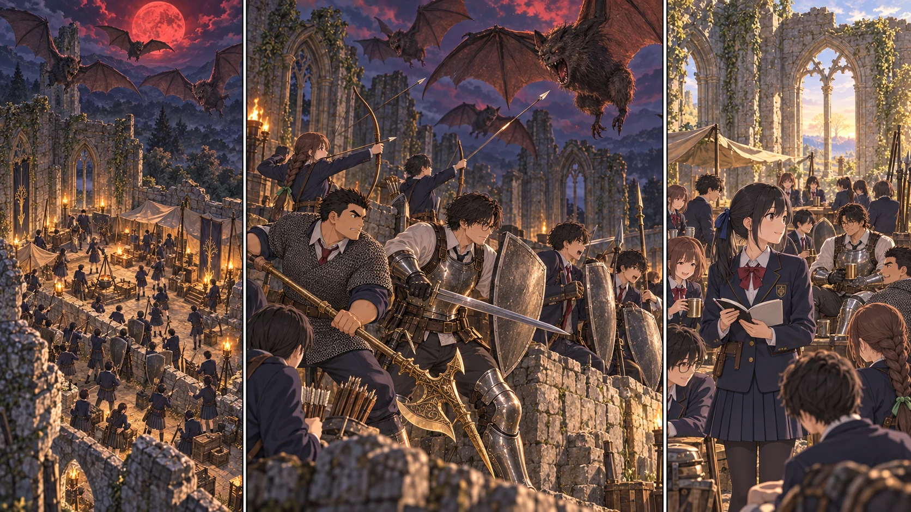
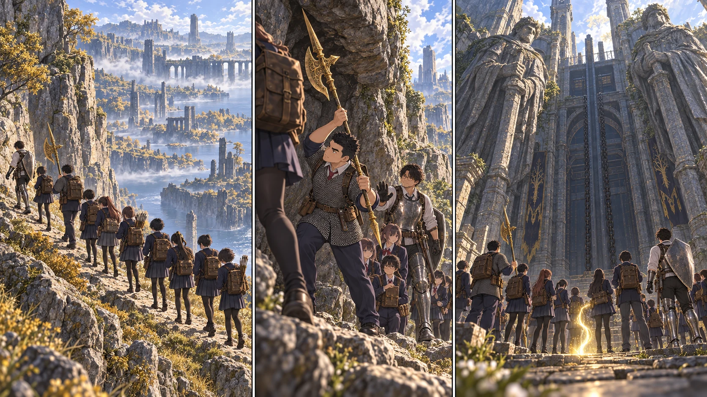
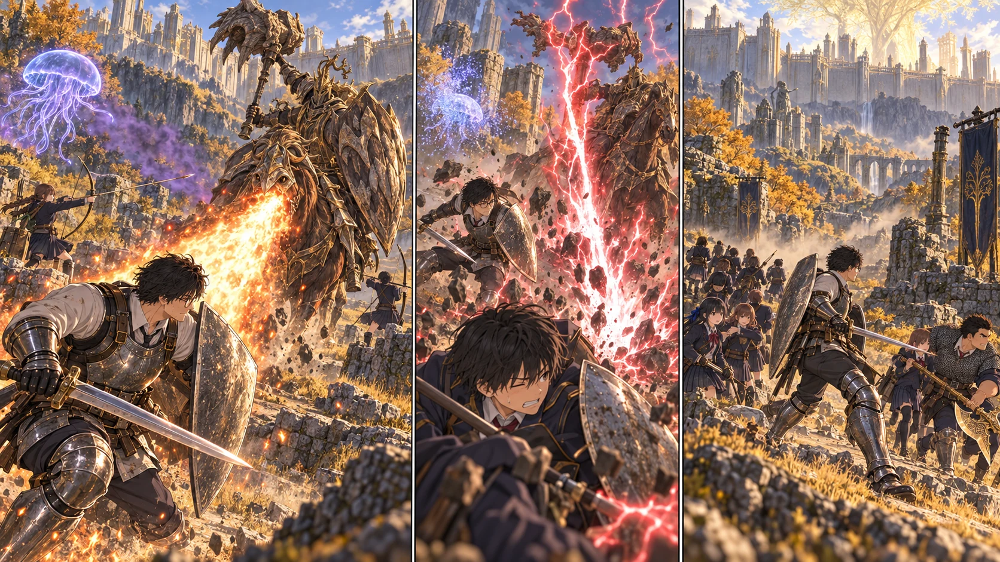

DAY60 · TURN1−70赤い月の下、帰る場所を守る。DAY60。教会に全33人が集結。二波の大コウモリを迎撃し、死者・負傷者なく赤月を越える。次は王都への補給路をつなぐ。
DAY61 · TURN1−71同じ道を、十三人で。DAY61。先生と攻略二班12人が既知経路を徒歩で進み、デクタス大昇降機下へ到着。13人の個人到達登録を完了。教会20人は生活と守備を継続。
DAY63 · TURN1−73雷の門番、届かなかった一歩。DAY63。竜のツリーガードへ挑戦。先生と陽太が軽傷、クララ消失。撃破条件未達により撤退し、13人全員が外廓の戦場跡へ生還。門番は健在。